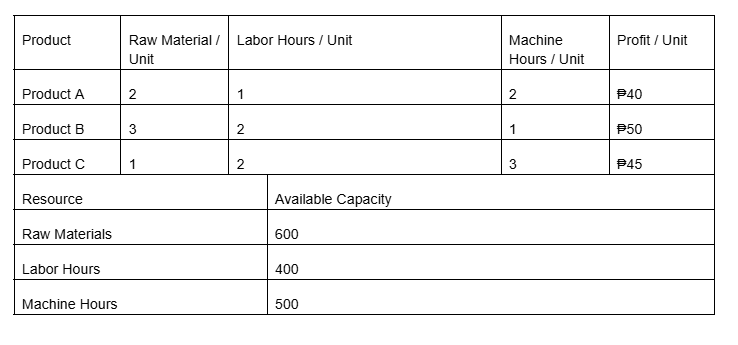
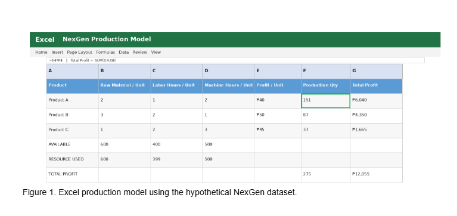
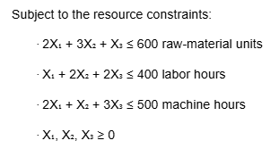
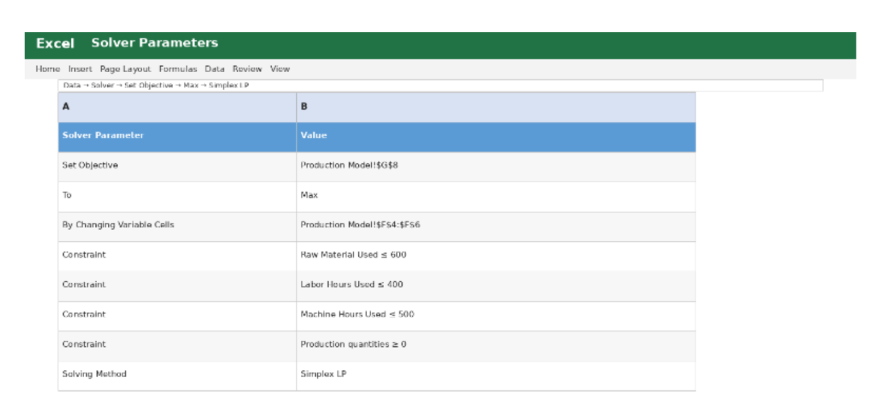
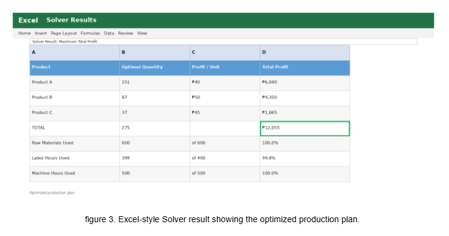
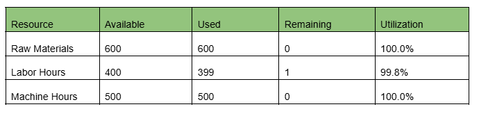
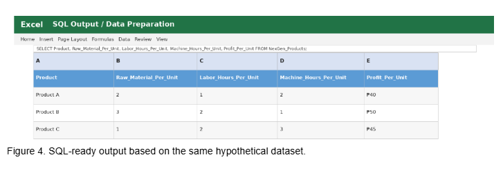
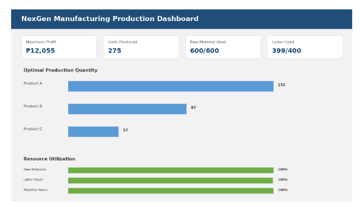

NexGen Products Manufacturing Production Optimization
This project focuses on analyzing and determining the optimal combination and quantity of products that NexGen Manufacturing should produce to maximize its total profit while considering limited resources, such as raw materials, labor hours, and machine capacity.

The problem
NexGen Products Manufacturing needs to determine the optimal combination and quantity of products to manufacture. Production is limited by raw materials, labor hours, and machine capacity. The objective is to maximize total profit without exceeding any available resource.
The data

My process
Step 1: Data Preparation in Excel

The production data was entered into Excel and organized into a model containing resource requirements, profit per unit, production quantities, and total profit. The production quantity cells were treated as decision variables. These are the cells that the optimization process changes.
Step 2: Linear Programming Model Development
The decision variables are X₁ = Product A quantity, X₂ = Product B quantity, and X₃ = Product C quantity.
Objective: Maximize Z = 40X₁ + 50X₂ + 45X₃

The objective function converts production quantities into total profit. Each constraint calculates the total resource consumed by the production plan and prevents the model from exceeding available capacity.
Step 3: Optimization Using Excel Solver

Excel Solver was used to maximize the Total Profit cell by changing the three production quantity cells. The resource constraints were entered so that raw-material, labor, and machine usage could not exceed their available capacities. Simplex LP was selected because the objective and constraints are linear.
Step 4: Data visualization
The optimal production plan is Product A = 151 units, Product B = 87 units, and Product C = 37 units. This combination produces a maximum total profit of ₱12,055.

Step 5: Resource Validation
Raw materials used = 600 of 600 units; labor used = 399 of 400 hours; machine hours used = 500 of 500 hours. All three resources remain within their limits.

SQL Data Preparation
SQL was used to organize the production dataset in a structured table so the product requirements and profit information could be retrieved consistently for analysis.

Step 7: Power BI Data Visualization
The optimized production quantities and profit results were prepared for Power BI. The dashboard summarizes maximum profit, total units produced, product quantities, and resource utilization.

Key findings
- The optimal production plan is 151 units of Product A, 87 units of Product B, and 37 units of Product C.
- The maximum calculated profit is ₱12,055.
- Raw material utilization is 100.0%, labor utilization is 99.8%, and machine utilization is 100.0%.
- The production plan stays within all resource limitations.
- Linear programming provides a structured way to compare production combinations and identify the most profitable feasible plan.
Result and impact
Using the hypothetical dataset, the optimization recommends producing 151 units of Product A, 87 units of Product B, and 37 units of Product C, generating a maximum total profit of ₱12,055. The result gives management a data-driven basis for production planning while keeping raw materials, labor, and machine usage within capacity.
Excel performs the model calculations and Solver optimization, SQL organizes the production data, and Power BI communicates the final results through management-friendly visuals.